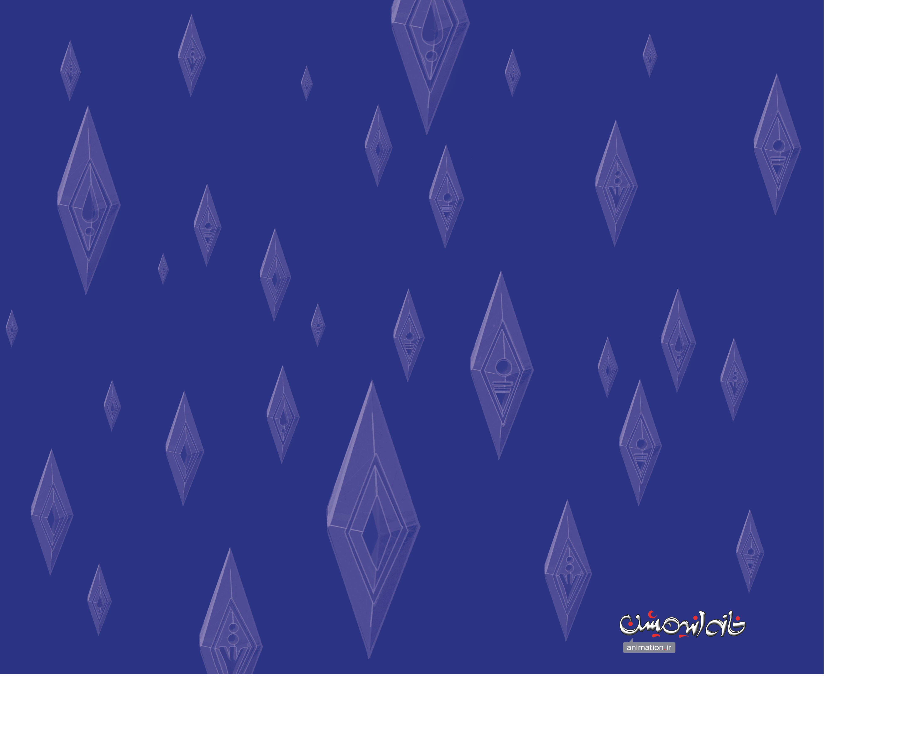
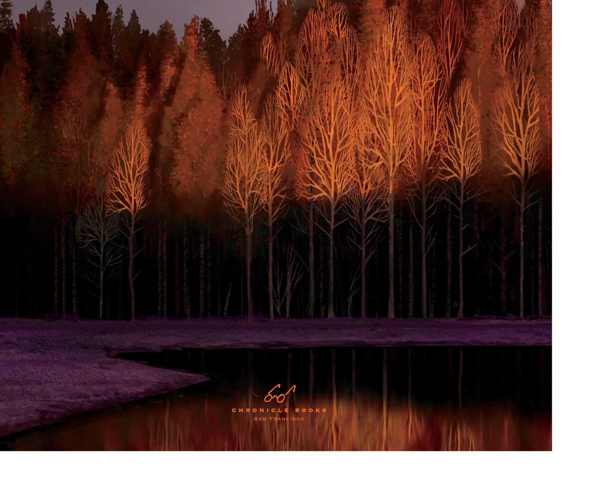
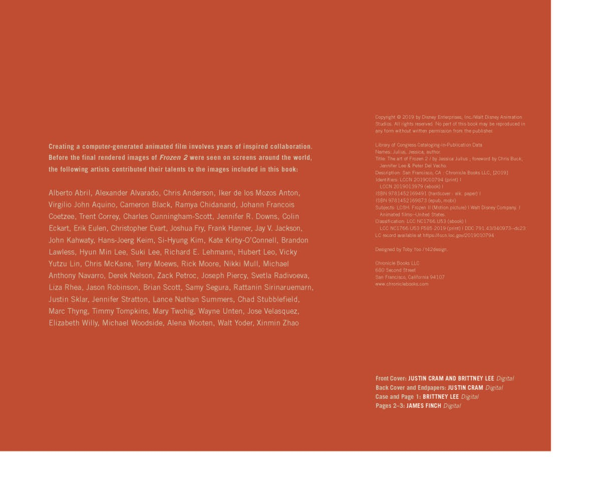
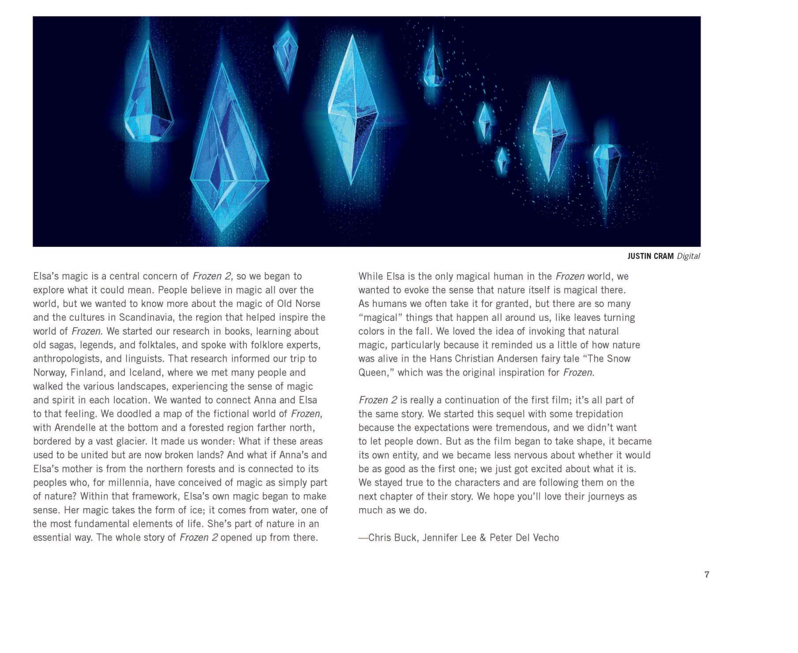
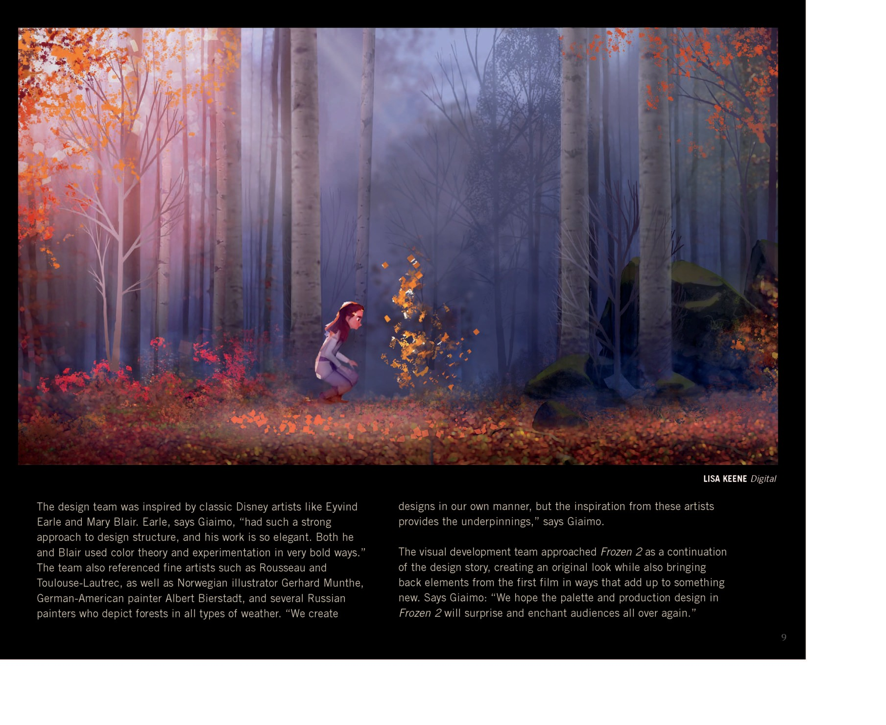
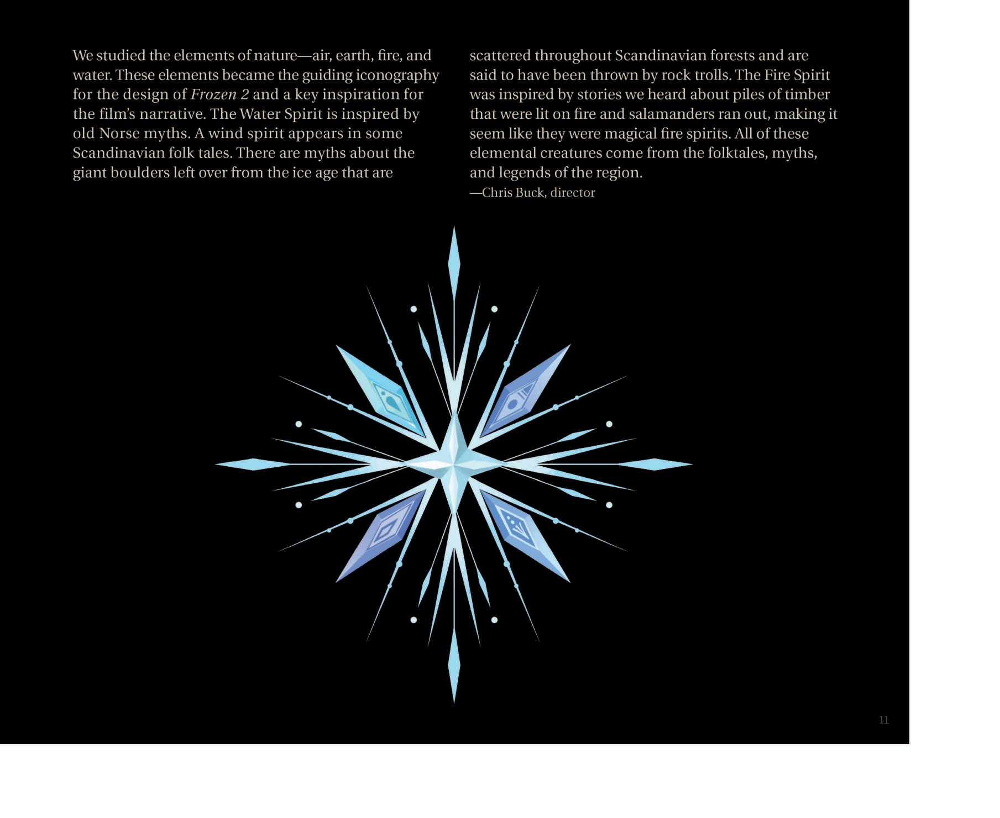

📖 设定集 · F2设定集
F2 图版 · 序言与阿伦黛尔
F2 官方设定集图版 · p001–p016 · p017–p023
5
本卷页数
🎨
设定集
中/英
双语
🖼️ F2 官方设定集 · 原书图版
F2 图版 · 序言与阿伦黛尔
《The Art of Frozen II》（Jessica Julius, Chronicle Books 2019） p001–p016 · p017–p023
17
图版
p001–p016 · p017–p023
原书页码
原书
扫描原图
笔记
逐页图注
📗 本图版收录《The Art of Frozen II》开篇与阿伦黛尔章节的剩余扫描页：封面与环衬、Foreword 序言、Introduction 与四元素符号体系，以及 Part One「Arendelle」的城镇地图、城堡立面与 Northuldra 旗帜（多数已在场景卷接入，此处为剩余页）。
📗 序言 · 介绍 · 元素符号（p001–p016）

封面（Cover）
《冰雪奇缘 II 艺术设定集》；作者 Jessica Julius；序言由导演 Chris Buck、Jennifer Lee 与制片人 Peter Del Vecho 撰写。（F2设定集原页）

扉页/装饰页（Frontispiece
此页为装饰页（类似环衬/扉页图案），无正文。冰晶符号母题贯穿全书的视觉设计体系，是 Frozen II 标志元素之一。（F2设定集原页）

扉页/装饰页（Frontispiece
该页为冰晶符号装饰页，无文字内容。（F2设定集原页）

空白页（Blank page）
该页为纯色空白页。（F2设定集原页）

序章扉页
该页为 Frozen II 的官方雪花标志独立展示页，无文字。（F2设定集原页）

版权页（Copyright page）/ 全书开篇概念图
出版方：Chronicle Books（旧金山）。此页概念图暗示故事中魔法森林秋景的氛围。（F2设定集原页）

标题页
同封面署名；该图揭示故事开场就在魔法森林中。（F2设定集原页）

版权页
这是版权与制作团队名单。关键信息：出版社 Chronicle Books；2019 出版；ISBN 9781452169491；设计 Toby Yee；封面及书脊 Brittney Lee / Justin Cram；环衬 James Finch。（F2设定集原页）

目录（Contents）
全书九大章节：序言、介绍、阿伦黛尔、风（Air）、地（Earth）、火（Fire）、水（Water）、Color Script、致谢。篇章对应 Frozen II 四大精灵（风地火水）。（F2设定集原页）

Foreword（序言，p6）
序言揭示创作动机：1) 为什么 Elsa 有魔法；2) Anna 是"leader"（领导者）、Elsa 是"protector"（守护者）；3) 与父母未解决的心结；4) Frozen = 神话 + 童话的混合体，Elsa 是神话式悲剧角色，Anna 是童话式英雄；Frozen II 必须保持这种结构。这是 Froz（F2设定集原页）

Foreword（序言，p7）
序言核心论点：1) Elsa 魔法是 Frozen II 中心议题；2) 研究 Old Norse、北欧神话；3) 实地探访挪威、芬兰、冰岛；4) 设计地图：阿伦黛尔在最南，更北是魔法森林，再北是冰川；5) 母亲来自北方森林；6) Elsa 魔法=冰=水的元素形态，是自然的一部分；7) Frozen 灵感来源 = 安徒（F2设定集原页）

Introduction（介绍，p9）
艺术灵感来源：Eyvind Earle、Mary Blair（迪士尼经典艺术家）、Rousseau、Toulouse-Lautrec、Gerhard Munthe（挪威插画师）、Albert Bierstadt、俄罗斯森林画家。该图是 Anna 与火精灵 Bruni 互动。（F2设定集原页）

元素设计文字（p11）
四大精灵的民间来源：Water Spirit ← 古 Norse 神话；Wind Spirit ← 北欧民间故事；Earth Giants ← 冰河时代巨石+山怪传说；Fire Spirit ← 燃烧木材跑出来的蝾螈传说。（F2设定集原页）

Arendelle 海湾概念图（章节过渡页）
描述了抵达阿伦黛尔港口时的壮丽场景——城堡尖塔、雪山、海湾、雪花装饰的码头立柱。（F2设定集原页）
🏰 Part One: Arendelle（p017–p023）

Part One: Arendelle 章节扉页（Chapter divider）
章节扉页 + 阿伦黛尔设计意图——更接近真实欧洲古镇，街道规划更合理，让人感觉是真实永久存在的地方。（F2设定集原页）

Arendelle Castle 雪后立面图（p16）
城堡精细设计+技术升级；引入 Disney's Hyperion Renderer（迪士尼新渲染器）增强材质真实感。（F2设定集原页）

Arendelle 风车磨坊概念图（p19）
阿伦黛尔郊外山顶上的水车磨坊，挪威风格草皮屋顶小屋。（F2设定集原页）
💡 图注说明
本页全部图版为《The Art of Frozen II》（Jessica Julius, Chronicle Books 2019）原书扫描（原图复制，未压缩），图注（中文标题 + 要点首句）逐页取自官方设定集中文笔记，点击图片可查看原尺寸扫描。
📌 本页要点
你正在阅读《设定集》卷的「F2 图版 · 序言与阿伦黛尔」。本页由电影正典、官方设定集与官方小说综合梳理，可作为该主题的速查入口；右侧目录可快速跳转到本页各小节。